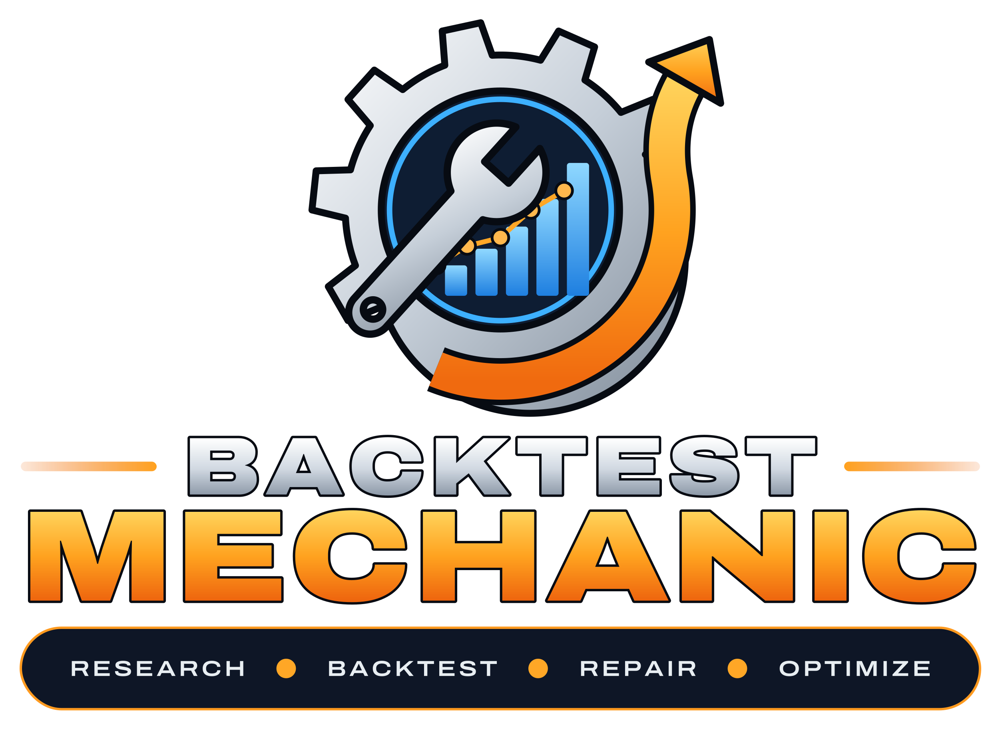

⌘
AI Strategy Builder
Describe a strategy in plain English and use Ollama to generate a structured JSON draft for review and refinement.

Turn trading ideas into structured strategies, backtest historical price action, examine the results, and refine your rules with local AI assistance.
Runs locally on your computer · Strategy JSON you can keep · Research-only backtesting
A practical workflow built around strategy ownership, transparent JSON rules, and historical evidence.
Describe a strategy in plain English and use Ollama to generate a structured JSON draft for review and refinement.
Keep the original AI output and a separate editable version. Validate, save, and test either one independently.
Run supported strategy rules against historical bars, with configurable data inputs and execution assumptions.
Explore performance in different volatility environments, including filtered strategy replays and regime comparisons.
Use validation feedback to request a repair candidate, review the proposed changes, and accept only the edits you want.
Review trade statistics, P&L, charts, basket comparisons, and strategy behavior before deciding what to change.
Start with an idea, or import an existing strategy JSON. You control the rules, the edits, and which version gets tested.
C:\OLLAMA> GENERATE_STRATEGY [01] READING STRATEGY REQUEST... [02] BUILDING JSON RULES... [03] VALIDATING STRATEGY... C:\OLLAMA> REPAIR_STRATEGY [01] INSPECTING VALIDATION ERRORS... [02] PROPOSING RULE CHANGES... [03] AWAITING USER APPROVAL... █
Backtest Mechanic is designed for local control. Build, edit, save, and revisit your strategies without handing ownership of your work to a cloud platform.
Public download and release details will be added here when the distribution package is ready.
No. Backtest Mechanic is a research and historical strategy-testing application, not a live order execution bot.
Yes. Original and edited JSON can be saved independently, even before validation. Validation is required before running a backtest.
You can manually edit the JSON or ask Ollama to propose a repair. The repair is reviewed before it is applied to your edited version.
The application runs locally on Windows. Ollama is used as a local AI assistant when configured.